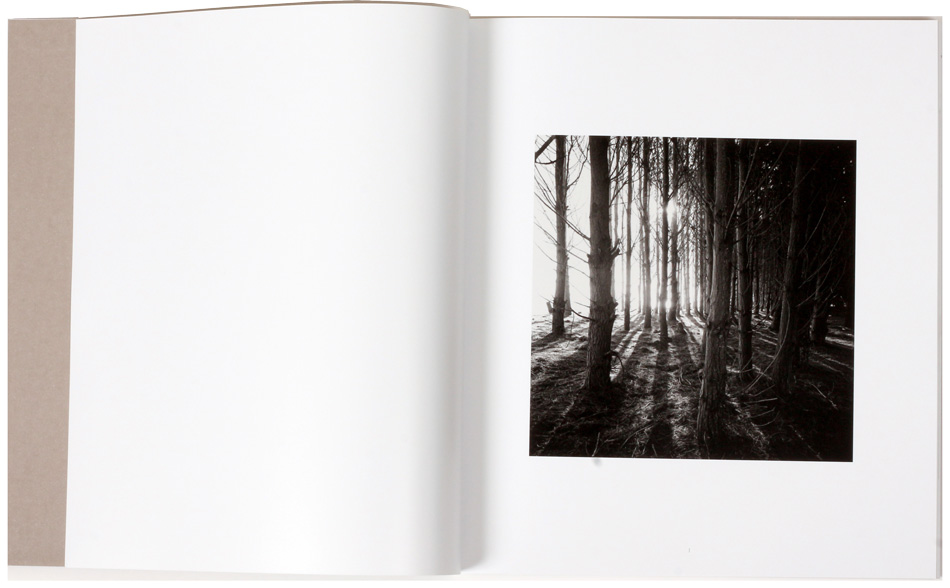

--------------------------------------
Primera Edición Mayo 2016
AL EXTERNO

- Formato: 25 x 28,5 cms
- 96 páginas
- Edición limitada de 500 ejemplares numerados y firmados
- Editado por Lúcuma
- Valor: $ 28.000 + IVA
- —Compra este Libro—
Por segunda vez desde que son pareja —hace 18 años—, Fernanda Larraín y Luis Poirot exponen juntos. En esta ocasión las imágenes que nos muestran son el resultado de andanzas y viajes que los han llevado a diferentes rincones de Chile. A veces separados por unos pocos metros, cada uno representa su visión personal de la naturaleza y del diálogo que tienen con ella. Fernanda con una mirada cercana y silenciosa, mientras Luis nos muestra un mundo en conflicto.
--------------------------------------